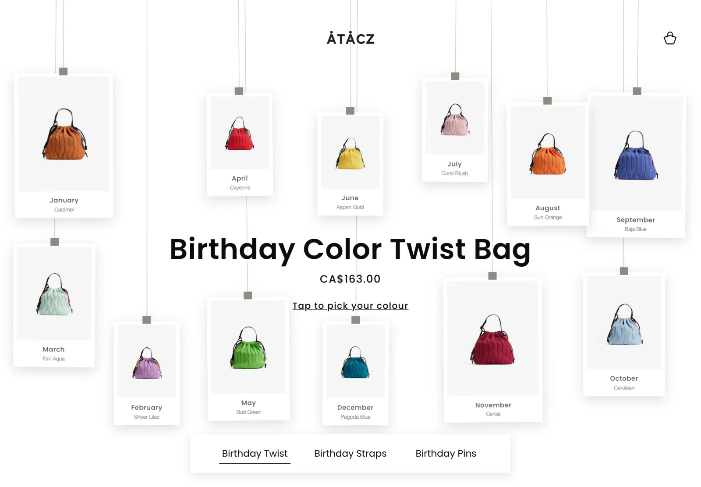
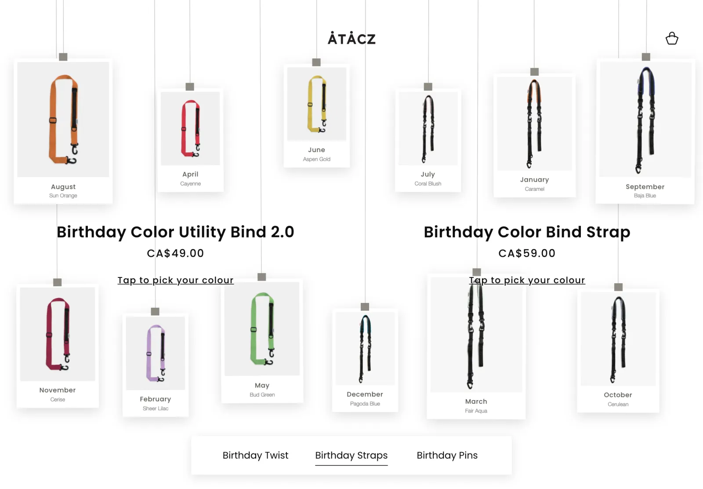
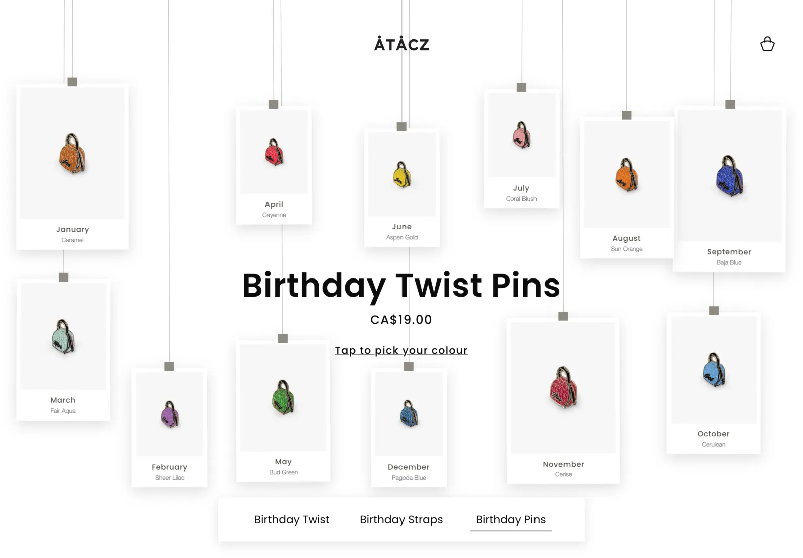
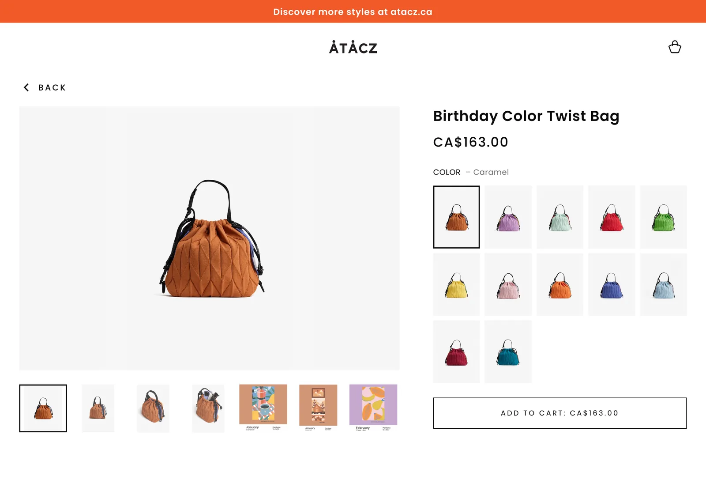

06 · Tri-City Pop-up
[Title — Han]
Three surfaces for one pop-up store: a landing page, an RSVP page for the live drawing event inside it, and the iPad kiosk on the shop floor — built on the live theme in days.
Draft. The pop-up opens on 20 November 2026 and the event is on 28 November; results come after.
Screen recording, mobile../../assets/case/06-tricity-popup/hero-mobile.mp4
Screen recording, desktop../../assets/case/06-tricity-popup/hero-desktop.mp4
1 · The problem
[One-line problem — Han]
[Why a pop-up at Tri-City Pavilion, what the page had to do, the deadline — Han.]
2 · The constraints
The kiosk is someone else’s app. In the store, shoppers browse on an iPad running a third-party kiosk app, Store Check-in, build a cart there, and pay on their own phone through a QR code. The app renders one card per product. Its only design control is a custom CSS box, capped at 20,000 characters: no markup, no script.
The app owns the gestures. A fast sideways swipe already means back or home.
The event is small. Six 30-minute slots of six people each, booked through the store’s own pages.
3 · Decisions
The collection, hung like ornaments
Twelve colours, twelve months, twelve threads. The top of the page is the Birthday Color Twist Bag, one card per colour, January to December, each hung from the ceiling on its own thread. Card size stands for depth: nearer cards are larger and sit higher in the stack. The thread and the card sway together, each on its own period.
One click moves all of them. Click a card and every card is pulled up its thread, the one you clicked first; then they drop back one at a time, in random order. Under prefers-reduced-motion nothing moves.
The landing page’s first screen on desktop and phone at once, scaled down, rebuilt from the live section’s values: positions, sizes, sway periods, timing. One change for this page: on desktop the copy sits in the gap between the cards. Click any card, or the button.


The Art of The Twist
Where design, art, and community come together.
Two layouts, not one. The ornaments stay fixed while the page scrolls, and the next sections slide over them. Desktop and phone each get their own position table, because a single one either clipped cards at the edge or split a card from its thread.
[Why ornaments — Han.]
Booking slots without a booking app
The form is the store’s own customer form. Picking a slot adds a customer tag. A Shopify Flow re-counts every tagged customer on each new tag and writes the totals to a store-wide value (a shop metafield), which the page reads to show the spaces left.
Re-count, not add one. A missed run fixes itself on the next.
The cost, agreed up front: two people submitting at once can overbook a slot, and that is accepted.
[Keeping the guest list in the store — Han to confirm this belongs in a public case]
[The first reference page saved names and emails outside the store. Moving the form onto Shopify kept consent and the list in one place.]
The same ornaments, on the shop-floor iPad
So twelve colours could not be twelve cards. The kiosk gives the Birthday Color Twist Bag one card. Instead, the twelve ornaments are drawn on twelve pseudo-elements of that one real card and its children. Each has its own thread length, width, colour photo, month and colour name, and sway period. Tapping anywhere on the scene opens the product, and the colour is picked there.
- Product list::before
- Card::before::after
- Product info::before::after
- Title::before::after
- Price::before
- Price text::before::after
- Description::before::after
Sized for the device. Thread length and card width are in vh, set for the iPad held landscape (1180×820).
Three tabs, three scenes. Birthday Twist, Straps and Pins each hang their own ornaments. Straps hangs two products, Utility Bind 2.0 on the left half and Bind Strap on the right, and a tap on either half opens that product. The drop and sway use the landing page’s values, so the page and the store move the same way.
Screens captured from the kiosk app’s own preview at the iPad’s size, 1180×820, with the location settings as they stood on 18 November. Tap it as on the iPad: the tab bar, the scene, Back, Add to cart, the cart icon and its close; or pick a screen below.





Screen
Designing the rest of the kiosk from a CSS box
Past the 20,000-character cap. The three scenes did not fit. The app also accepts font stylesheet URLs, which it loads as ordinary <link> tags, so the scenes moved into a stylesheet hosted in Shopify Files, with no size limit. Every edit is uploaded under a new file name, so the iPad cannot change before a version is published.
Tabs you tap, not swipe. Because the app owns the swipe, the tab row became a navigation bar at the bottom centre. It rises first, and an underline grows under the open tab.
The store’s product page, inside the app. It takes the live theme’s type and button sizes. Colours are photo tiles instead of text pills, with a 2px outline on the chosen one. The app paints the selected option with a forced background colour; rather than fight it with !important, the tile redefines the variable that rule reads.
A cart you can read at a glance. The QR code shrank from 252 to 202px, so two and a half items show at once instead of one. A band under the cart title shows the gift-with-purchase pouch: a free Festive Nano Twist with orders of $180 or more.
4 · Outcome
Pending. The event is on 28 November 2026.
5 · What’s next
[Han.]